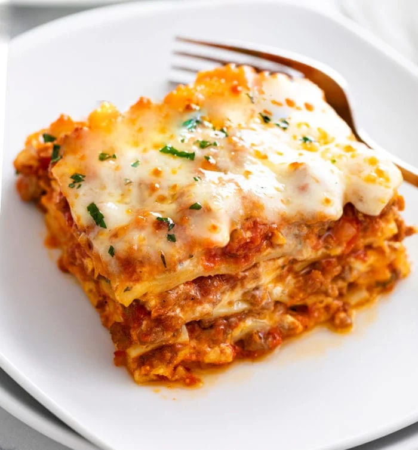

A classic take on a classic dish
A combination of beefy red sauce, delectable noodles, and a blend of Italian cheeses
is what makes this classic lasagna come together in one pan. Kick back and let
the oven do all the work. Easy to make, easy to bake.
Ingredients
Makes 6 servings
- nonstick cooking spray, for greasing
- 1 lb ground beef, cooked and drained of fat
- 4 cups marinara sauce
- 4 cups whole milk ricotta cheese
- 2 cups grated parmesan cheese
- 2 tablespoons fresh parsley, chopped
- 2 tablespoons fresh basil, chopped
- 1 teaspoon kosher salt
- 1/2 teaspoon freshly ground black pepper
- 2 tablespoons extra virgin olive oil
- 15 lasagna noodles, cooked according to package instructions
- 3 cups shredded mozzarella cheese
Steps
- Preheat oven to 350 degrees Fahrenheit. Grease a 9 x 13-inch baking
dish lightly with nonstick spray.
- In a large bowl, mix together the ground beef and marinara sauce.
- In a separate large bowl, combine the ricotta, parmesan, parsley,
basil, salt, pepper, and olive oil.
- Spread 1 cup of the meat sauce over the bottom of the prepared baking dish.
Top with 5 cooked lasagna noodles, overlapping as needed to completely
cover the sauce. Spread 2 cups of the ricotta mixture over the noodles.
Top with 1 cup of mozzarella cheese. Repeat with the remaining meat
sauce, noodles, ricotta, and mozzarella to make 2 more layers.
- Bake the lasagna for 25-30 minutes, until the cheese is melted and
the sauce is bubbling up through the layers. Turn the broiler to high
and broil for 1-2 minutes, until the top layer of cheese is bubbly
and golden brown.
- Let the lasagna cool for 30-45 minutes, then serve.
- Enjoy!
Home